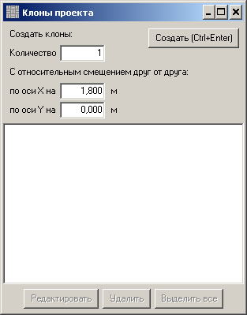
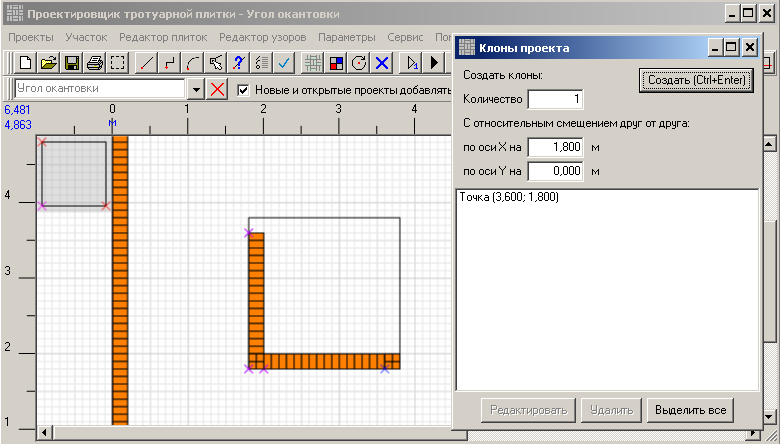

Проектировщик тротуарной плитки 2.2
Клонирование проектов
Есть ситуации, когда элементы проекта повторяются в разных местах. На рисунке ниже, если
присмотреться, то видно, что окантовка верхней границы квадрата повторяет окантовку нижней, а окантовка
левой границы - окантовку правой. И все четыре угла одинаковы. И они все вместе такие же, как и
окантовки другого квадрата (его не видно на рисунке). Вместо рисования всех этих копий, можно сделать
клоны проекта. Клон - это не проект. Его нельзя изменить - ни границы, ни узор, ни цвет плиток.
У клона это всё меняется при изменении в проекте-оригинале. Количество плиток в клоне учитывается
в отчёте по проекту.
Начинаем создавать клоны. Так как у нас активным проектом является "Угол окантовки", с него и начнём. На нижнем тулбаре нажимаем кнопку "Клоны проекта" .
.
Начнём с создания клона в правом нижнем углу квадрата. Мы создаём один клон, на том же уровне по высоте, что и оригинал. Это означает, что нужно ввести "1" в поле "Количество" и "1,8" в поле "по оси X на". "1,8" - это 1,8 метра.
В правом нижнем углу появился такой же проект. Обратите внимание, что в списке клонов появилась строка с координатами. Это абсолютные координаты базовой точки клона на чертеже.
Теперь создаём клон в левом верхнем углу.
Теперь клон для правого верхнего угла. Для него нужно смещение 1,8 м по обоим осям.
Принцип понятен, уменьшаем масштаб, чтобы видеть второй квадрат.
Создаём клоны углов для второго квадрата.

С углами закончили. Создадим клоны для окантовок сторон квадрата. Выбираем из списка проектов проект "Горизонтальная окантовка". Ниже показаны координаты клонов для этого проекта.
И то же самое для проекта "Вертикальная окантовка".
Начинаем создавать клоны. Так как у нас активным проектом является "Угол окантовки", с него и начнём. На нижнем тулбаре нажимаем кнопку "Клоны проекта"
.
Начнём с создания клона в правом нижнем углу квадрата. Мы создаём один клон, на том же уровне по высоте, что и оригинал. Это означает, что нужно ввести "1" в поле "Количество" и "1,8" в поле "по оси X на". "1,8" - это 1,8 метра.


В правом нижнем углу появился такой же проект. Обратите внимание, что в списке клонов появилась строка с координатами. Это абсолютные координаты базовой точки клона на чертеже.
Теперь создаём клон в левом верхнем углу.
Теперь клон для правого верхнего угла. Для него нужно смещение 1,8 м по обоим осям.
Принцип понятен, уменьшаем масштаб, чтобы видеть второй квадрат.
Создаём клоны углов для второго квадрата.
С углами закончили. Создадим клоны для окантовок сторон квадрата. Выбираем из списка проектов проект "Горизонтальная окантовка". Ниже показаны координаты клонов для этого проекта.
И то же самое для проекта "Вертикальная окантовка".